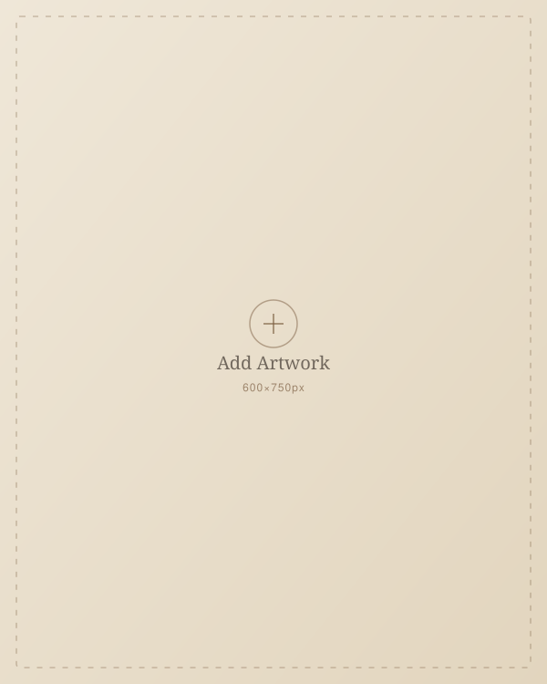
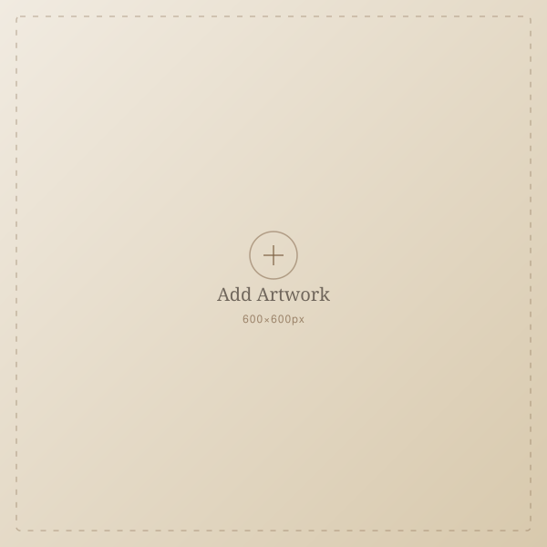
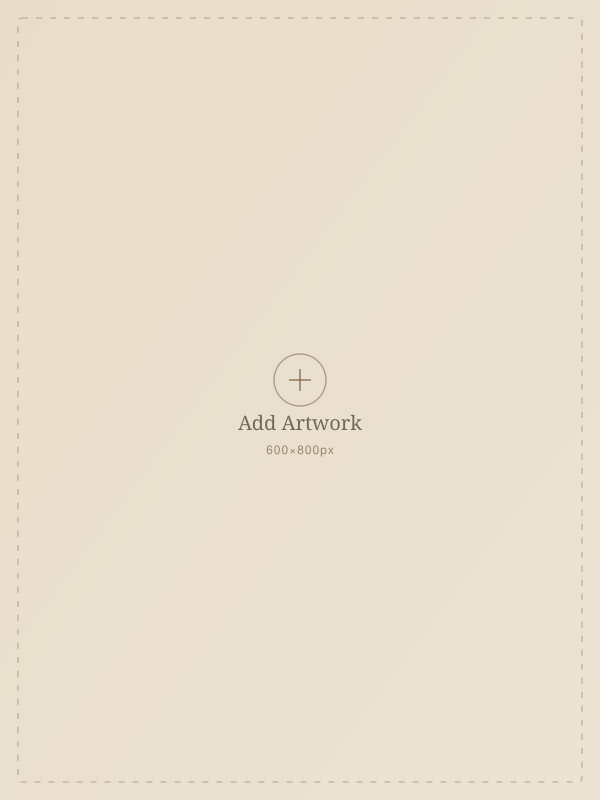
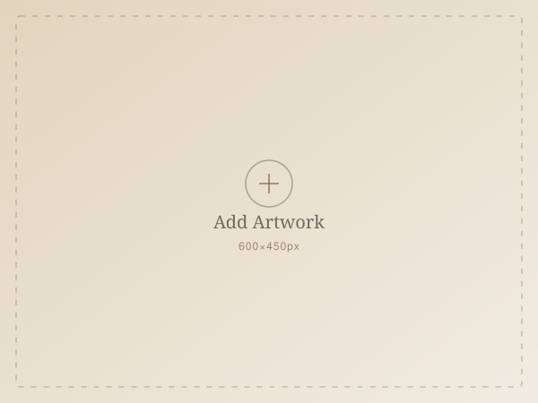
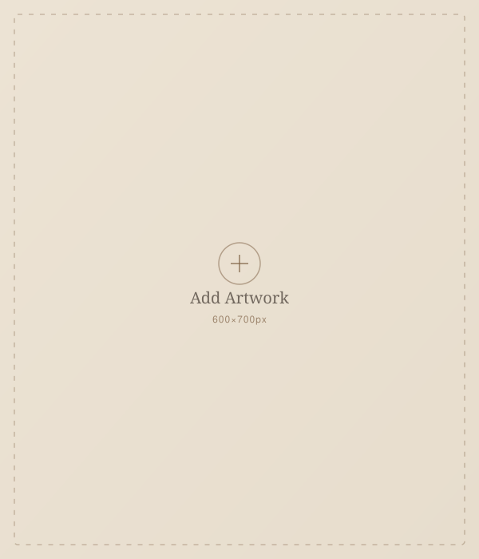
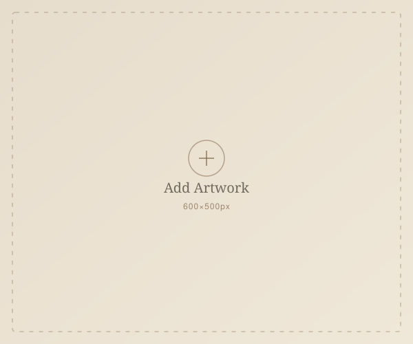

Product · Strategy · Design
Hi, I'm Claire.
A sophomore studying Applied Mathematics–Economics and Behavioral Sciences, I turn user research into product decisions — and sketch on the side. I've worked across tech, nonprofits, sales strategy, and product management, and I care about building things that are both well-reasoned and well-designed.
About
A little about me
The short version: research-driven, detail-oriented, and always sketching something in the margins.
I'm Claire Jiang — a sophomore from Atlanta, Georgia, studying Applied Mathematics–Economics and Behavioral Sciences. I'm drawn to product management because it sits exactly where those two disciplines meet: rigorous enough to trust the data, human enough to understand why people actually behave the way they do.
Across student consulting clubs, internships, and independent projects, I've run user interviews, built competitive teardowns, and turned research into prioritized, shippable recommendations for teams at companies like Uber Eats, Depop, Framer, and Tendium. I've also picked up experience in nonprofit work and sales strategy along the way — which mostly taught me that good product thinking travels well outside of tech, too.
Outside of casework, I'm usually on a tennis court, on a long walk somewhere, or drawing — a few pieces are in the Art section below.
Skills & Tools
Research & Strategy
Tools
Communication
Portfolio
Product Case Studies
Independent and club-based projects covering research, strategy, and UX recommendations.
Uber Eats Ads
Understanding Small Restaurant Ad Behavior
Interviewed restaurant owners and benchmarked DoorDash, Instacart, and Instagram Ads to uncover why in-app ad adoption stalls — and shipped research-backed UX recommendations to fix it.
View Case Study →Depop
Improving Convenience & Reliability in the Buyer Experience
Defined a product strategy for Depop's buyer experience — using reverse image search, Pinterest-style discovery, and bundle offers to reduce search friction and abandoned carts.
View Case Study →Framer
Enhancing Academic Market Adoption through UX & Student Research
Explored how college design and CS students perceive and engage with Framer to identify usability blockers and opportunities to build academic stickiness and trust.
View Case Study →Tendium
AI Bid Coordination Platform — International Growth Proposal
Built a go-to-market proposal to grow Tendium's AI-powered bid coordination platform internationally during a hands-on product internship.
View Case Study →Beyond Product
Art
A sketchbook of what I make when I'm not thinking about roadmaps. Click any piece to view it larger.






These are placeholder tiles. Drop your own images into assets/art/, then swap the
<img> src and data-category (sketch / painting / digital) for each
<figure class="art-tile"> in index.html. Full details in the README.